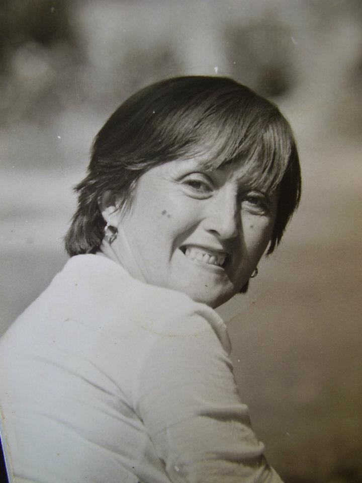
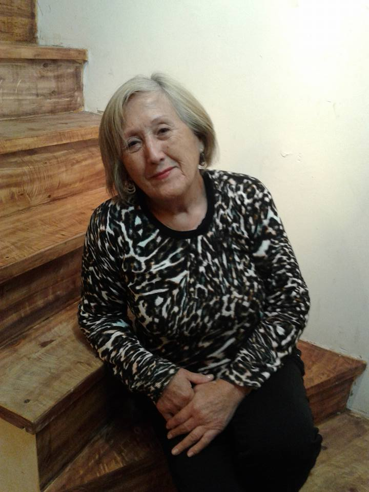
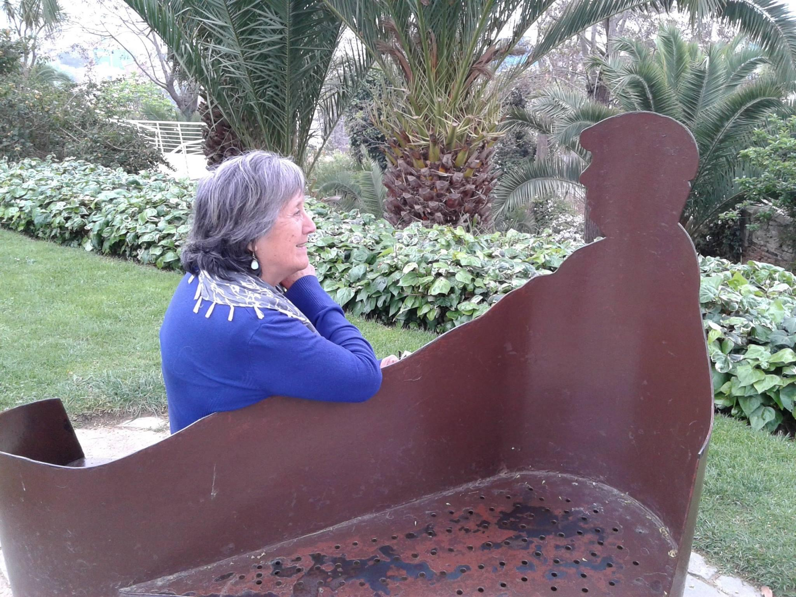
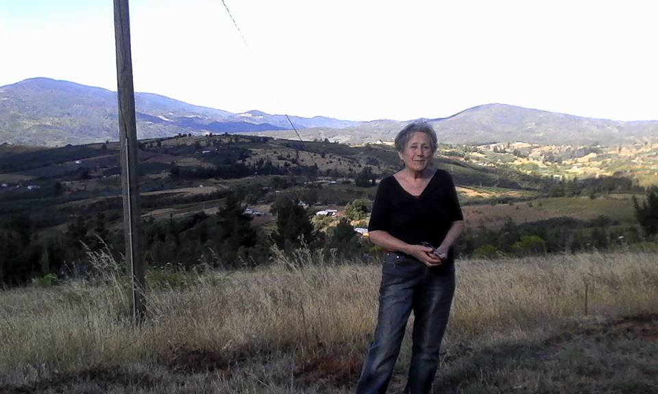
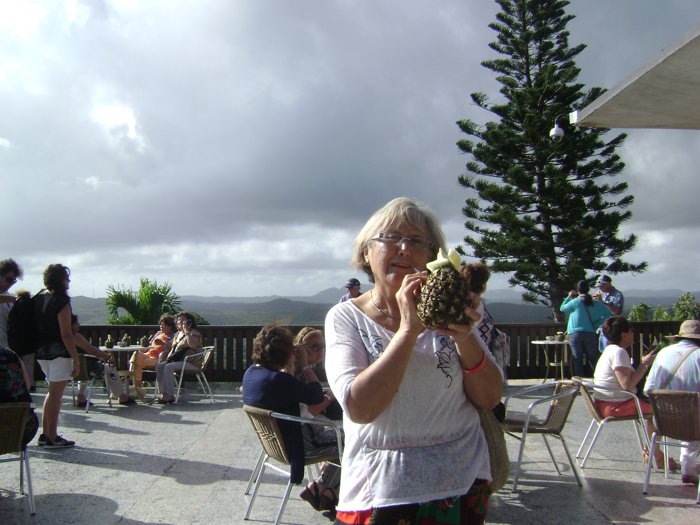
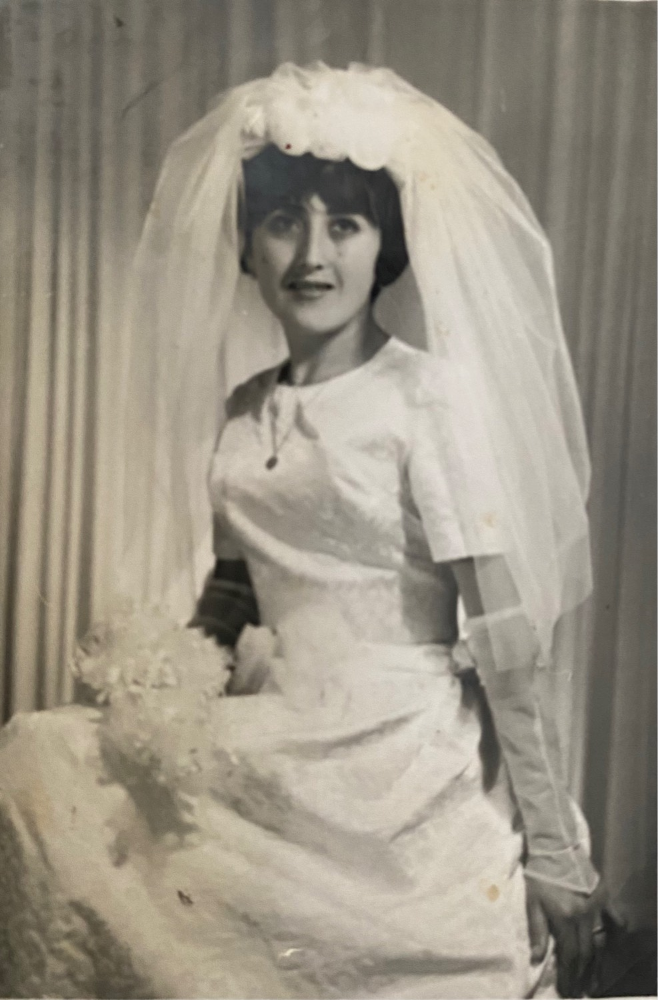
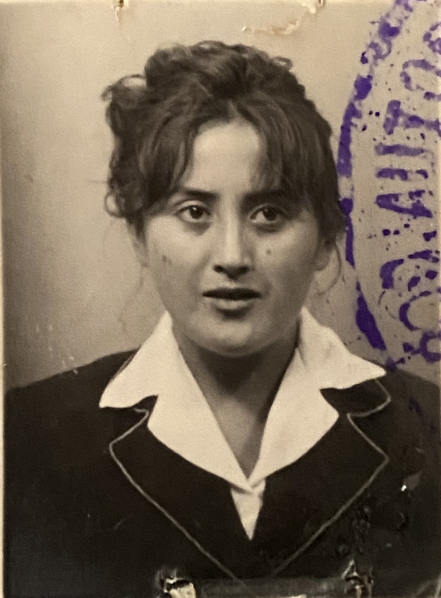
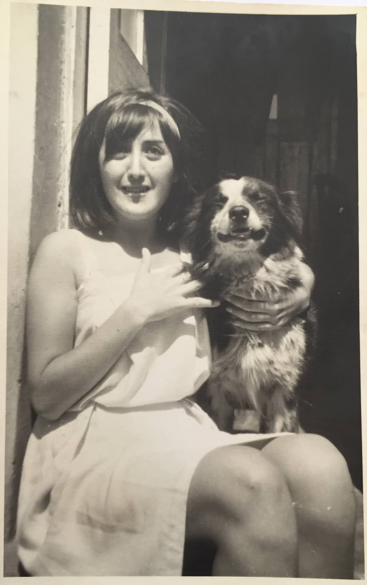

Biografía
María Elisa Moya Soyo nació el 4 de febrero de 1944 en Concepción, Chile, siendo la única hija de José Manuel Moya Fuentes y María Elisa Soto Acuña. Creció en el sector de Lorenzo Arenas en Concepción, donde vivió su niñez y juventud. Desde joven, María Elisa mostró un profundo interés por la lectura y el canto. Su hermosa voz la llevó a participar en emisoras locales de Concepción, donde interpretaba canciones en vivo, siendo reconocida y premiada por su talento. Esta pasión por la música la llevó a desarrollar su habilidad a un nivel más académico y profesional al formar parte del Coro Polifónico de Concepción. Con esta agrupación, tuvo la oportunidad de cantar en la Catedral de Concepción, en Santiago, y en el prestigioso Teatro Colón de Buenos Aires, Argentina; experiencias que siempre guardó con cariño en su corazón. El 12 de enero de 1966, a la edad de 21 años, María Elisa se casó con Ricardo Stalin Quiroz Zúñiga. Juntos tuvieron seis hijos, aunque tristemente, su hija Perla Cristina solo vivió un día. A lo largo de su vida, fue bendecida con ocho nietos, quienes se convirtieron en su orgullo y alegría. María Elisa decidió estudiar educación y se tituló como Profesora Normalista en la Universidad de Concepción, dedicando casi 40 años de su vida a la docencia. Además de su vocación como educadora, encontraba paz y alegría en la pintura, dominando técnicas como la acuarela y el óleo. Realizó numerosas obras para familiares, amigos y para su propio placer. Otro de sus grandes placeres era visitar el campo, especialmente la zona rural de Quillón, un lugar que frecuentaba desde los 10 años. Disfrutaba de la compañía de su gente, los paisajes y las deliciosas cerezas. Siempre fue recibida con los brazos abiertos y mucho cariño, especialmente en el campo de Queime, donde compartía hermosos momentos con su hermano de corazón, Luis Briceño, y la tía Leontina. María Elisa fue una mujer profundamente luchadora, creativa, servicial, creyende en Dios y una hija, abuela y madre muy amada. Agradecemos todo lo que nos dio, y aunque ya no esté con nosotros, su amor sigue presente en nuestros corazones. Más adelante, nos volveremos a encontrar y abrazar. Besos al cielo madre.
Video Homenaje (12 minutos)
Videos del recuerdo
0 Like
0 Like
0 Like
Palabras para María
"Mensaje conmemorativo"
"Mensaje conmemorativo"
"Mensaje conmemorativo"